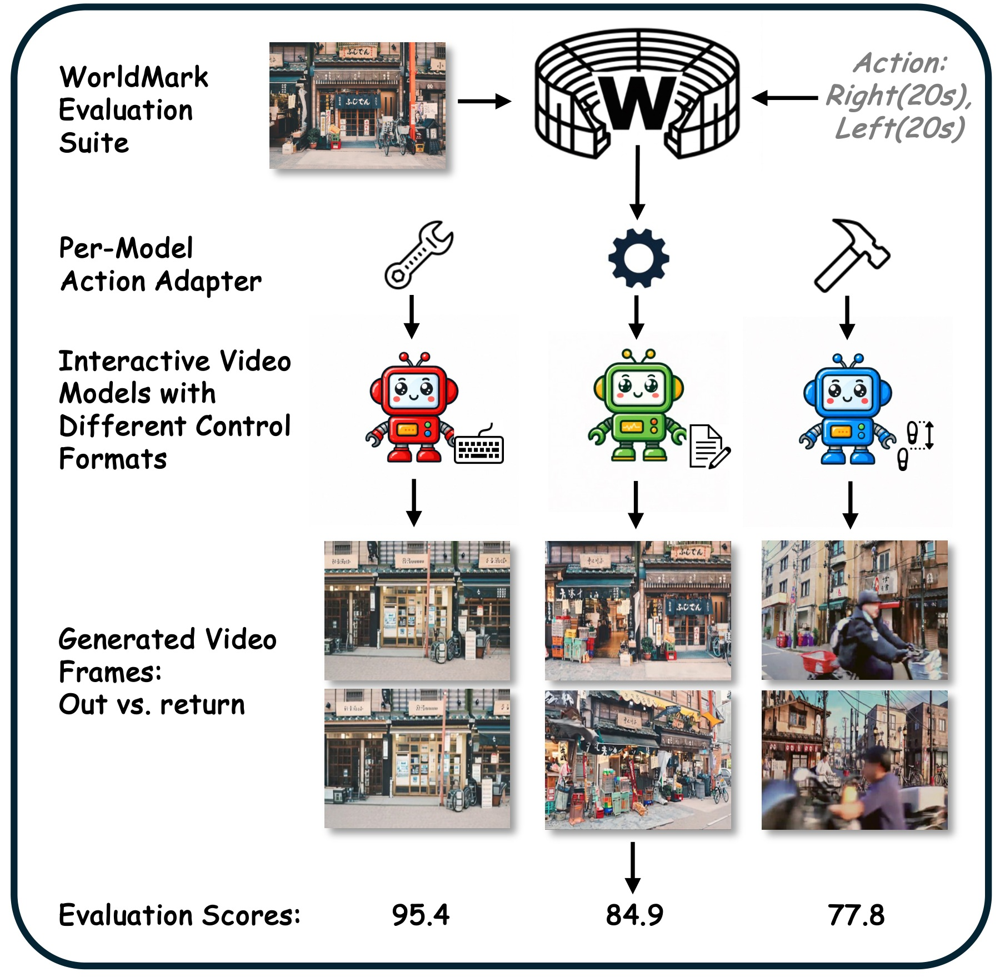
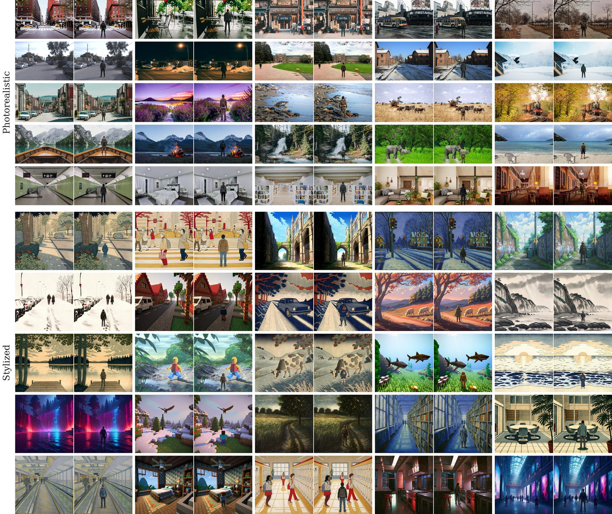
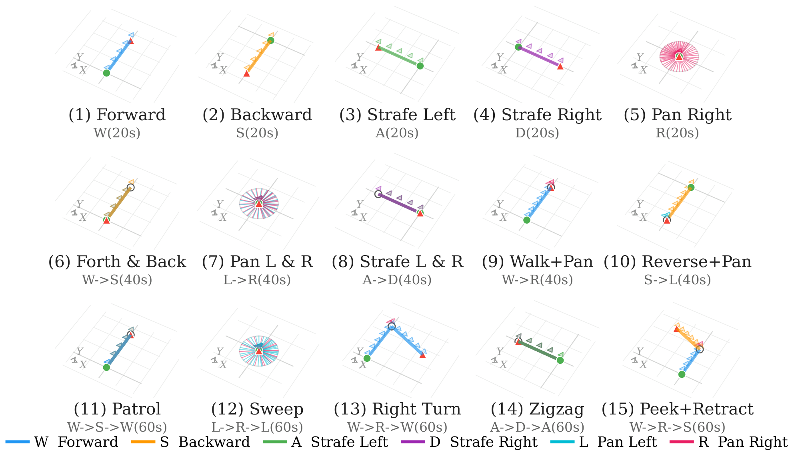
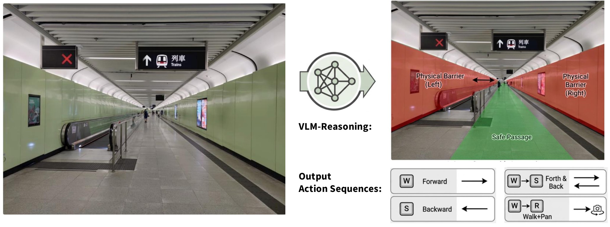
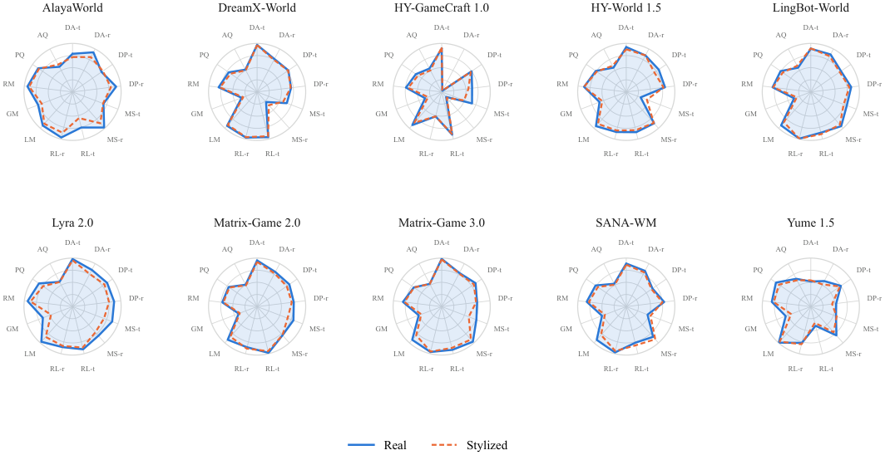

WorldMark: A Unified Benchmark Suite for Interactive Video World Models
1Alaya Lab 2The University of Tokyo 3Shanghai Innovation Institute
†Corresponding authors: yongtao.ge@shanda.com, kaipeng.zhang@shanda.com

1Alaya Lab 2The University of Tokyo 3Shanghai Innovation Institute
†Corresponding authors: yongtao.ge@shanda.com, kaipeng.zhang@shanda.com

An interactive world model is not only a video generator: it is an environment. You press a key, and the world is supposed to move that way, keep moving while you hold it, stop when you let go, and still be there when you turn back.
WorldMark is a benchmark that measures exactly that.
It drives ten heterogeneous models—caption-, pose-, keyboard-, and trajectory-controlled—from one shared WASD-style action vocabulary over 500 standardized cases, and scores the result with nine deterministic metrics covering action dynamics, world memory, and visual quality.
Command Forth & Back W→S 40s
· Look for whether the camera actually reverses when the command flips, or keeps advancing through both halves.
Command Pan L & R L→R 40s
· Look for whether the motion stays on the yaw axis, or leaks into strafing and forward drift.
Command Strafe Right D 20s
· Look for whether motion holds steady, or stutters, stalls, and decays to a standstill while the command still runs.
Command Forth & Back W→S 40s
· Look for how soon the new command takes effect at the 20s switch—a step, or a ramp that arrives seconds late.
Command Forward W 20s
· Look for flicker, mutation, or an outright cut between adjacent moments.
Command Pan L & R L→R 40s
· Look for whether turning back returns you to the view you left, or to somewhere else entirely.
Command Pan L & R L→R 40s
· Look for whether the scene layout survives the full sweep, or its structures rearrange as the camera passes—invisible in any single pair of frames.
Command Zigzag A→D→A 60s
· Look for per-frame fidelity: sharpness and detail against haze, clutter, and low-level distortion.
Command Reverse + Pan S→L 40s
· Look for aesthetic appeal: composition, colour, and lighting rather than pixel-level fidelity.
Benchmark Suite
Models differ in what they accept—key presses, keyboard–mouse vectors, pose strings, camera trajectories, or directional keywords in a caption—and in how they internalize it: Plücker ray maps, PRoPE, cross-attention modules, or AdaLN-injected poses. A per-model action-mapping adapter translates the shared vocabulary into the native format along three paths:
Six primitives—forward, backward, strafe left/right, yaw left/right—each parameterized by duration, compose all 15 trajectories.
25 photorealistic and 25 stylized references drawn from the WorldScore pool of 1000 per domain, deduplicated to preserve its semantic diversity at a fortieth of its size. Each first-person reference is paired with a synthesized third-person view, giving 100 test images across three scene categories (Nature, City, Indoor) and styles from oil painting and Ukiyo-e to Minecraft.

For each image, a VLM selects the five most plausible sequences from the library, identifying physical constraints—lateral obstacles in a corridor make prolonged strafing implausible—so models are not penalized for refusing to walk through a wall. Across 100 images this yields 500 evaluation cases.


Does motion go the right way, only that way, soon enough—and does it hold?
Does the world stay the same—at three separate timescales?
Does everything else reduce to appearance? (It does not.)
Quantitative Results
All metrics normalized to [0,100], higher is better. Bold = best, underline = second best. 125 videos per model per split.
| Model | Action Dynamics | World Memory | Visual Quality | ||||||||||
|---|---|---|---|---|---|---|---|---|---|---|---|---|---|
| Direction Accuracy |
Direction Purity |
Motion Stability |
Response Latency |
Local | Global | Revisit | Perceptual | Aesthetic | |||||
| trans | rot | trans | rot | trans | rot | trans | rot | ||||||
| AlayaWorld | 78.67 | 92.31 | 72.55 | 90.32 | 68.05 | 98.08 | 75.48 | 96.76 | 92.53 | 75.77 | 93.43 | 85.94 | 58.50 |
| DreamX-World | 96.91 | 76.60 | 78.18 | 70.38 | 65.41 | 27.71 | 96.10 | 97.00 | 93.29 | 34.04 | 79.89 | 71.16 | 51.98 |
| HY-GameCraft 1.0 | 89.07 | 2.74 | 74.82 | 63.07 | 66.76 | 13.70 | 90.97 | 51.99 | 91.31 | 36.54 | 74.20 | 64.55 | 54.38 |
| HY-World 1.5 | 92.55 | 85.05 | 81.18 | 80.31 | 31.66 | 86.39 | 85.44 | 85.13 | 94.17 | 58.88 | 87.52 | 76.15 | 56.59 |
| LingBot-World | 89.14 | 87.32 | 75.43 | 83.64 | 79.14 | 94.26 | 86.56 | 99.20 | 92.26 | 36.85 | 79.30 | 75.65 | 56.49 |
| Lyra 2.0 | 98.16 | 85.44 | 86.32 | 86.18 | 87.21 | 80.35 | 90.62 | 86.10 | 96.91 | 65.34 | 93.26 | 84.03 | 57.66 |
| Matrix-Game 2.0 | 95.12 | 80.66 | 80.57 | 75.97 | 79.89 | 78.85 | 98.23 | 86.47 | 91.31 | 40.56 | 72.22 | 71.15 | 51.00 |
| Matrix-Game 3.0 | 98.37 | 78.30 | 84.83 | 73.38 | 76.39 | 96.74 | 91.83 | 96.39 | 91.52 | 50.60 | 80.38 | 69.62 | 52.86 |
| SANA-WM | 88.74 | 83.08 | 65.51 | 78.55 | 46.79 | 83.39 | 76.83 | 97.41 | 91.70 | 53.45 | 82.05 | 76.76 | 53.16 |
| Yume 1.5 | 51.85 | 59.47 | 75.16 | 52.53 | 55.35 | 79.45 | 40.66 | 77.11 | 99.36 | 55.25 | 80.96 | 87.24 | 64.72 |
| Model | Action Dynamics | World Memory | Visual Quality | ||||||||||
|---|---|---|---|---|---|---|---|---|---|---|---|---|---|
| Direction Accuracy |
Direction Purity |
Motion Stability |
Response Latency |
Local | Global | Revisit | Perceptual | Aesthetic | |||||
| trans | rot | trans | rot | trans | rot | trans | rot | ||||||
| AlayaWorld | 71.89 | 81.17 | 75.78 | 79.48 | 67.13 | 86.29 | 55.55 | 86.69 | 87.65 | 67.82 | 89.94 | 84.01 | 63.83 |
| DreamX-World | 96.57 | 74.62 | 77.65 | 69.56 | 57.20 | 36.43 | 94.03 | 96.02 | 90.87 | 30.71 | 76.89 | 66.38 | 50.37 |
| HY-GameCraft 1.0 | 91.77 | 2.83 | 72.63 | 55.46 | 49.24 | 15.85 | 89.38 | 51.97 | 84.92 | 29.94 | 69.52 | 59.34 | 50.07 |
| HY-World 1.5 | 87.91 | 85.09 | 70.41 | 77.30 | 45.37 | 85.48 | 81.15 | 81.90 | 87.97 | 52.80 | 87.57 | 73.83 | 60.86 |
| LingBot-World | 89.98 | 83.20 | 72.31 | 79.81 | 72.22 | 90.25 | 89.67 | 99.31 | 83.43 | 30.81 | 78.13 | 70.42 | 60.85 |
| Lyra 2.0 | 95.44 | 76.00 | 80.07 | 75.56 | 69.21 | 70.88 | 87.03 | 83.62 | 83.53 | 47.36 | 87.15 | 73.91 | 57.21 |
| Matrix-Game 2.0 | 92.17 | 77.34 | 74.10 | 71.91 | 67.09 | 78.72 | 94.58 | 89.26 | 82.89 | 38.13 | 70.03 | 69.42 | 49.40 |
| Matrix-Game 3.0 | 97.13 | 77.08 | 80.58 | 71.21 | 59.50 | 90.76 | 87.75 | 95.54 | 79.08 | 44.91 | 77.10 | 69.35 | 52.75 |
| SANA-WM | 86.27 | 79.62 | 63.13 | 75.11 | 53.46 | 89.96 | 82.20 | 94.42 | 78.19 | 47.17 | 77.50 | 71.12 | 50.98 |
| Yume 1.5 | 54.24 | 51.77 | 72.92 | 44.09 | 56.79 | 70.80 | 34.58 | 80.00 | 96.36 | 43.34 | 76.96 | 79.68 | 61.29 |
| Model | Action Dynamics | World Memory | Visual Quality | ||||||||||
|---|---|---|---|---|---|---|---|---|---|---|---|---|---|
| Direction Accuracy |
Direction Purity |
Motion Stability |
Response Latency |
Local | Global | Revisit | Perceptual | Aesthetic | |||||
| trans | rot | trans | rot | trans | rot | trans | rot | ||||||
| DreamX-World | 97.29 | 75.64 | 76.48 | 69.30 | 61.92 | 26.49 | 95.98 | 97.15 | 93.64 | 31.16 | 79.44 | 71.60 | 52.87 |
| HY-World 1.5 | 90.49 | 82.12 | 81.34 | 77.75 | 41.92 | 87.83 | 80.69 | 84.87 | 93.92 | 55.97 | 87.55 | 76.57 | 59.11 |
| LingBot-World | 74.22 | 55.78 | 69.85 | 62.80 | 66.76 | 64.42 | 81.15 | 74.39 | 89.89 | 47.08 | 81.68 | 76.67 | 58.74 |
| Matrix-Game 2.0 | 91.34 | 46.50 | 76.49 | 39.82 | 77.59 | 75.22 | 98.11 | 87.71 | 78.76 | 31.68 | 75.64 | 67.23 | 45.78 |
| SANA-WM | 88.89 | 83.10 | 64.60 | 78.33 | 46.03 | 82.52 | 76.84 | 97.35 | 91.32 | 52.25 | 82.62 | 75.44 | 52.72 |
| Model | Action Dynamics | World Memory | Visual Quality | ||||||||||
|---|---|---|---|---|---|---|---|---|---|---|---|---|---|
| Direction Accuracy |
Direction Purity |
Motion Stability |
Response Latency |
Local | Global | Revisit | Perceptual | Aesthetic | |||||
| trans | rot | trans | rot | trans | rot | trans | rot | ||||||
| DreamX-World | 96.39 | 75.03 | 75.93 | 69.74 | 53.15 | 36.33 | 95.45 | 94.58 | 90.12 | 29.94 | 77.59 | 66.22 | 50.76 |
| HY-World 1.5 | 93.02 | 79.07 | 72.05 | 71.65 | 50.15 | 85.46 | 79.25 | 83.03 | 89.26 | 48.04 | 85.46 | 75.92 | 64.05 |
| LingBot-World | 69.93 | 30.90 | 65.97 | 43.49 | 59.67 | 32.74 | 78.10 | 52.17 | 87.59 | 47.71 | 76.87 | 77.52 | 68.03 |
| Matrix-Game 2.0 | 93.94 | 42.42 | 76.95 | 37.49 | 74.03 | 67.46 | 86.73 | 79.90 | 72.97 | 31.28 | 75.26 | 67.29 | 45.98 |
| SANA-WM | 87.43 | 80.84 | 63.92 | 76.79 | 54.21 | 89.30 | 79.78 | 93.91 | 75.78 | 46.17 | 76.33 | 70.59 | 51.63 |

Key Findings
Beyond offline metrics: pit leading world models against each other in side-by-side battles and watch the live leaderboard.
Enter the Arena →Citation
@article{xu2026worldmark,
title={WorldMark: A Unified Benchmark Suite for Interactive Video World Models},
author={Xu, Xiaojie and Lin, Zhengyuan and He, Kang and Feng, Yukang and Mao, Xiaofeng and Yin, Yuanyang and Ge, Yongtao and Zhang, Kaipeng},
journal={arXiv preprint arXiv:2604.21686},
year={2026}
}